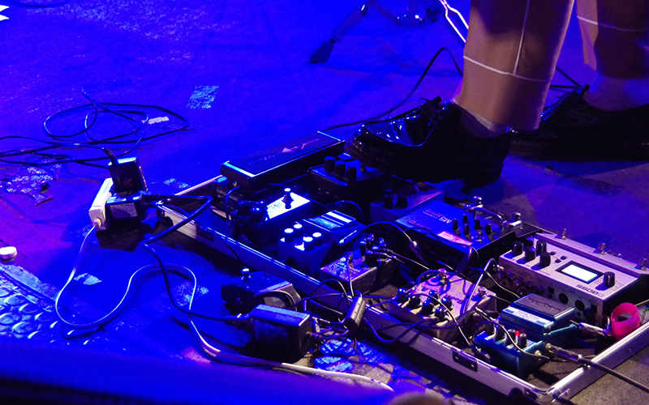

Numbers
洋楽・邦楽の比率って？
全201バンド
※春音、秋音、お楽しみ会（SPFバンドバトル以外）は除く
洋楽：107バンド 邦楽：94バンド

男女比率
Girls：42% Boys：58%

パート比率
Q.音団連っていうのがいまいち分からない。
A.音団連とは、R.F.U、おたまじゃくしの会、ALBION、Over All Music、そして、アメリカ民謡研究会という、5つの公認音楽サークルで構成される団体です。アンプ等の機材の共有をはじめ合同ライブの開催など、互いに助け合いつつ、音楽に関しては好敵手といった、バランスのとれた関係を築いています。それぞれの団体に個性があるので、新入生の方は新歓期などを利用し、各サークルを回ってみることをおすすめします。また一部の団体はウィリアムズホール２階にあるコモンルームをよく利用しているため普段から交流があり、お互いのサークルのライブを覗きに行くこともしばしばあります。音楽の話題はもちろん、大学の講義の情報共有などを通して友達も増えやすいです。